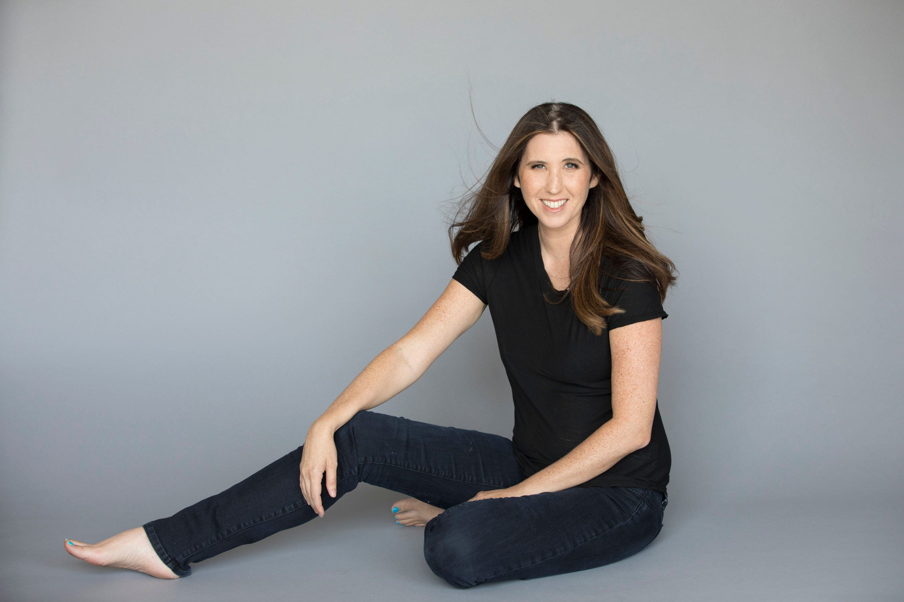
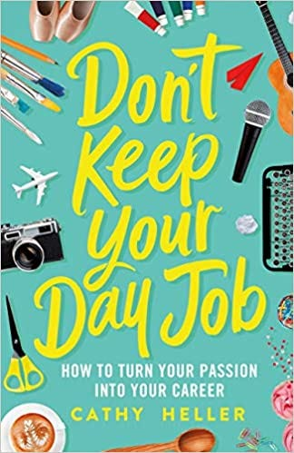

Business and life coaches like Cathy Heller
Signals of emotions can travel fiber optic cables and make you cry


Signals of emotions can travel fiber optic cables and make you cry. That’s what I have experienced today watching the video version of the podcast Don’t Keep Your Day Job hosted by Cathy Heller. Then whatever bad we can say about this connection engine which is the internet, we should agree that there are people like Cathy doing things with care and reaching people like me living miles away from where the work is done. The internet is the best connection engine that we human beings have ever created because with it I get connected to great people like Seth Godin and now to Cathy Heller. Because people like us do things like this I will now care about the work and path of Cathy and hope you too that’s why I thought that Like All these women software engineers about whom I have written about Cathy also deserve some cheap but empathic words from me.
Like the name of the podcast of Cathy which I am eager to discover and add to my favorite podcast, I am not advising you to quit your day job because I have really been in pains living mine 7 years from now and I think that this idea that you have can be a side project that you can run in pair with your day job but who knows maybe you are braver than me and maybe you can experience quitting your day job better than me.
Cathy is leading us by teaching us how to turn our passion into a career and that purpose she has published this book that I am also eager to read

The real value of the blockchain technology will only be visible and viable if It focused on people rather than currencies, securities, safety, and now art with NTF because between Seth Godin, Cathy Heller, and me there is a clear chain of connected people. Why can't we use blockchain technologies to highlight and empower such chains of connected people who care about each other?
If Cathy is crying when discussing with Seth, it is because like what he does with me, he helped her level up by sharing his experience, thoughts, and ideas through the mean of books but mainly by blogging every day like what I am trying to do and what I highly advise you to also do.
When you market with permission you end up not needing to hustle and advertise and permission is a transferable asset because now it sure that I will give permission and trust to Cathy like how I did with Seth and all of this is also about people like us do things like this. The business of the internet is about permission, trust, and connections, three pieces that everyone who is eager to do works that matter online should understand and leverage. I don't know about Cathy but I learned a lot about these 3 pieces from Seth Godin’s works. Then I think watching this video of Cathy talking with seth Godin will help you learn something about these 3 important things
PS: this article is part of the Greyio Hear Experiment.